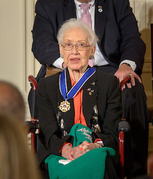

Katherine Coleman Goble Johnson (born August 26, 1918) is an African-American mathematician whose calculations of orbital mechanics as a NASA employee were critical to the success of the first and subsequent U.S. manned spaceflights. During her 35-year career at NASA and its predecessor, she earned a reputation for mastering complex manual calculations and helped the space agency pioneer the use of computers to perform the tasks.
Johnson's work included calculating trajectories, launch windows and emergency return paths for Project Mercury spaceflights, including those of astronauts Alan Shepard, the first American in space, and John Glenn, the first American in orbit, and rendezvous paths for the Apollo lunar lander and command module on flights to the Moon. Her calculations were also essential to the beginning of the Space Shuttle program, and she worked on plans for a mission to Mars. In 2015, President Barack Obama awarded Johnson the Presidential Medal of Freedom. She was portrayed by Taraji P. Henson as a lead character in the 2016 film Hidden Figures.
Early Life and Education
Katherine Johnson was born Katherine Coleman in 1918 in White Sulphur Springs, West Virginia, to Joylette and Joshua Coleman. She was the youngest of four children. Her mother was a teacher and her father was a lumberman, farmer, and handyman and worked at the Greenbrier Hotel.
Johnson showed high mathematical abilities from an early age. Because Greenbrier County did not offer public schooling for African-American students past the eighth grade, the Colemans arranged for their children to attend high school at Institute, West Virginia. This school was on the campus of West Virginia State College (WVSC, now West Virginia State University). Johnson was enrolled when she was only 10 years old. The family split their time between Institute during the school year and White Sulphur Springs in the summer.
Johnson graduated from high school at 14 and entered West Virginia State, a historically black college. As a student, she took every math course offered by the college. Multiple professors mentored her, including chemist and mathematician Angie Turner King, who had also mentored Johnson throughout high school, and W. W. Schieffelin Claytor, the third African American to receive a PhD in math. Claytor added new math courses just for Katherine. She graduated summa cum laude in 1937, with degrees in mathematics and French, at age 18. She took on a teaching job at a black public school in Marion, Virginia.
In 1939, after marrying her first husband, James Goble, Johnson left her teaching job and enrolled in a graduate math program. She quit after one year, after becoming pregnant and choosing to focus on her family. At the time of her entry, she was the first African-American woman to attend graduate school at West Virginia University in Morgantown, West Virginia. Through WVSC's president, Dr. John W. Davis, she became one of three African-American students, and the only woman, selected to integrate the graduate school after the United States Supreme Court ruling Missouri ex rel. Gaines v. Canada (1938). The court had ruled that states that provided public higher education to white students also had to provide it to black students, to be satisfied either by establishing black colleges and universities or by admitting black students to previously white-only universities.
Career
Johnson decided on a career as a research mathematician, although this was a difficult field for African Americans and women to enter. The first jobs she found were in teaching. At a family gathering in 1952 a relative mentioned that the National Advisory Committee for Aeronautics (NACA) was hiring mathematicians. (It was superseded by the agency NASA in 1958.) At the Langley Memorial Aeronautical Laboratory, based in Hampton, Virginia, near Langley Field, NACA hired African-American mathematicians as well as Caucasians for their Guidance and Navigation Department. Johnson was offered a job in 1953. She accepted and became part of the early NASA team.
From 1953 to 1958, Johnson worked as a "computer", analyzing topics such as gust alleviation for aircraft. Originally assigned to the West Area Computers section supervised by mathematician Dorothy Vaughan, Johnson was reassigned to the Guidance and Control Division of Langley's Flight Research Division. It was staffed by white male engineers. In keeping with state racial segregation laws, and federal workplace segregation introduced under President Woodrow Wilson in the early 20th century, Johnson and the other African-American women in the computing pool were required to work, eat, and use restrooms that were separate from those of their white peers. Their office was labeled as "Colored Computers". In an interview with WHRO-TV, Johnson stated that she "didn't feel the segregation at NASA, because everybody there was doing research. You had a mission and you worked on it, and it was important to you to do your job ... and play bridge at lunch." She added: "I didn't feel any segregation. I knew it was there, but I didn't feel it."
From 1958 until her retirement in 1986, Johnson worked as an aerospace technologist, moving during her career to the Spacecraft Controls Branch. She calculated the trajectory for the May 5, 1961 space flight of Alan Shepard, the first American in space. She also calculated the launch window for his 1961 Mercury mission. She plotted backup navigation charts for astronauts in case of electronic failures. When NASA used electronic computers for the first time to calculate John Glenn's orbit around Earth, officials called on Johnson to verify the computer's numbers; Glenn had asked for her specifically and had refused to fly unless Johnson verified the calculations. Biography.com states these were "far more difficult calculations, to account for the gravitational pulls of celestial bodies". Author Margot Lee Shetterly stated, "So the astronaut who became a hero, looked to this black woman in the still-segregated South at the time as one of the key parts of making sure his mission would be a success." She added that, in a time where computing was "women's work" and engineering was left to men, "it really does have to do with us over the course of time sort of not valuing that work that was done by women, however necessary, as much as we might. And it has taken history to get a perspective on that."
Johnson later worked directly with digital computers. Her ability and reputation for accuracy helped to establish confidence in the new technology. In 1961, her work helped to ensure that Alan Shepard's Freedom 7 Mercury capsule would be quickly found after landing, using the accurate trajectory that had been established.
She also helped to calculate the trajectory for the 1969 Apollo 11 flight to the Moon. During the moon landing, Johnson was at a meeting in the Pocono Mountains. She and a few others crowded around a small television screen watching the first steps on the moon. In 1970, Johnson worked on the Apollo 13 moon mission. When the mission was aborted, her work on backup procedures and charts helped set a safe path for the crew's return to Earth, creating a one-star observation system that would allow astronauts to determine their location with accuracy. In a 2010 interview, Johnson recalled, "Everybody was concerned about them getting there. We were concerned about them getting back." Later in her career, Johnson worked on the Space Shuttle program, the Earth Resources Satellite, and on plans for a mission to Mars.
Personal Life
In 1939, Katherine (then Coleman) married James Francis Goble. They had three daughters: Constance, Joylette, and Katherine. In 1953, she and James moved their family to Newport News to pursue a new job opportunity. In 1956, James Goble died due to an inoperable brain tumor.
Katherine Goble remarried in 1959 to James A. Johnson, who had been a second lieutenant in the army and was a veteran of the Korean War.
Katherine Johnson continued her career at NASA. She sang in the choir of Carver Presbyterian Church for 50 years. She has been a member of Alpha Kappa Alpha since college, the first sorority established by and for African-American women. Johnson and her husband, who have six grandchildren and 11 great-grandchildren, live in Hampton, Virginia. She continues to encourage her grandchildren and students to pursue careers in science and technology.
Legacy and Honors

Medal of Honor
Johnson co-authored 26 scientific papers. Her social influence as a pioneer in space science and computing is demonstrated by the honors she has received and her status as a role model for a life in science. Since 1979 (before she retired from NASA), Johnson has been listed among African Americans in science and technology. Johnson was named West Virginia State College Outstanding Alumnus of the Year in 1999. President Barack Obama presented Johnson with the Presidential Medal of Freedom, one of 17 Americans so honored on November 24, 2015. She was cited as a pioneering example of African-American women in STEM.
On May 5, 2016, a new 40,000-square-foot (3,700 m2) building was named "Katherine G. Johnson Computational Research Facility" and formally dedicated at the agency's Langley Research Center in Hampton, Virginia. The facility officially opened its doors on September 22, 2017. Johnson attended this event, which also marked the 55th anniversary of astronaut Alan Shepard's historic rocket launch and splashdown, a success Johnson helped achieve. At the ceremony, deputy director Lewin said this about Johnson: "Millions of people around the world watched Shepard's flight, but what they didn't know at the time was that the calculations that got him into space and safely home were done by today's guest of honor, Katherine Johnson". During the event, Johnson also received a Silver Snoopy award; often called the astronaut's award, NASA stated it is given to those "who have made outstanding contributions to flight safety and mission success".
In 2016, Johnson was included in the list of "100 Women", BBC's list of 100 influential women worldwide. NASA stated, "Her calculations proved as critical to the success of the Apollo Moon landing program and the start of the Space Shuttle program, as they did to those first steps on the country's journey into space."
Johnson has been portrayed in the media. The highly acclaimed film Hidden Figures, released in December 2016, was based on the non-fiction book of the same title by Margot Lee Shetterly, which was published earlier that year. It follows Johnson and other female African-American mathematicians (Mary Jackson and Dorothy Vaughan) who worked at NASA. Taraji P. Henson plays Johnson in the film. Appearing alongside Henson at the 89th Academy Awards, Johnson received a standing ovation from the audience. In an earlier interview, Johnson offered the following comment about the movie: "It was well-done. The three leading ladies did an excellent job portraying us." In a 2016 episode of the NBC series Timeless, titled "Space Race", the mathematician is portrayed by Nadine Ellis.
West Virginia State University announced plans for an endowed STEM scholarship in honor of Johnson and a life-size statue of her on campus. On May 12, 2018 she was awarded an honorary doctorate by the College of William and Mary.
In 2016, science writer Maia Weinstock developed a prototype Lego for Women of NASA and included Johnson, who declined to have her likeness printed for the final product. In 2018, Mattel announced a Barbie doll in the likeness of Johnson, with a NASA identity badge.
Honours
Year
Name of Award
Awarded By:
2014
De Pizan Honor
National Women’s History Museum
2015
Pioneer in Tech Award
National Center for Women & Information Technology
2015
Presidential Medal of Freedom
Barack Obama
2016
Silver Snoopy Award
Leland Melvin
Other African-American Women in STEM
Dorothy Vaughan, mathematician and self made computer programmer
Annie Easley, mathematician
Mary Jackson engineer, mathematician and aerospace engineer
Wanda Austin, aerospace engineer
Johnnetta Cole, anthropologist, educator and museum director